VEOcc: Voxel-Centric Online Semantic Occupancy Prediction For Embodied Scene Understanding
Abstract
Crucial for autonomous exploration, online 3D occupancy prediction and mapping incrementally constructs dense spatial representations on the fly. However, recent Gaussian-centric methods struggle with structural boundary fidelity and rely heavily on predefined scene-size priors, fundamentally limiting their operational efficiency. In this work, we present VEOcc, a voxel-centric framework formulated as a recursive perception-and-assimilation paradigm. By eliminating the need for initial scale estimation, VEOcc enables highly streamlined, open-ended map expansion. Furthermore, to robustly aggregate noisy temporal observations within the discrete voxel space, we propose a Spatio-Temporal-Aware Online Update Strategy. It integrates Cross-Temporal Logit Aggregation (TLA) for temporal consistency, Reliability-Aware Confidence Modulation (RCM) for spatial uncertainty calibration, and Confidence-Driven Incremental State Update (CSU) for robust global state assimilation. Extensive experiments on Occ-ScanNet and EmbodiedOcc-ScanNet demonstrate that VEOcc establishes new state-of-the-art performance in both local and embodied settings. Notably, zero-shot evaluations on self-collected video sequences further confirm its robust out-of-distribution generalization capability in completely unseen real-world environments. Ultimately, our framework provides an accurate and highly efficient solution for autonomous exploration.
Zero-Shot Real-Robot Demonstrations
Methodology
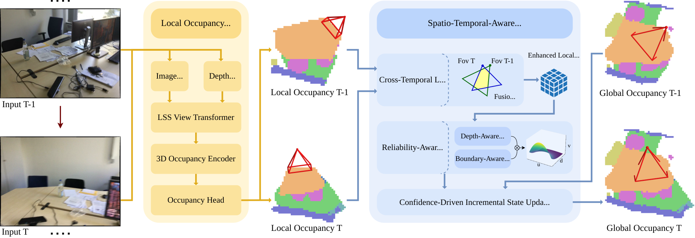
The overall framework of our proposed VEOcc. Given a sequence of monocular images, a voxel-centric network first predicts frame-wise local occupancy, which is then incrementally assimilated into a global occupancy grid via the proposed Spatio-TemporalAware Online Update Strategy. Within this strategy, Cross-Temporal Logit Aggregation (TLA) enforces temporal consistency, ReliabilityAware Confidence Modulation (RCM) calibrates spatial uncertainties, and Confidence-Driven Incremental State Update (CSU) recursively integrates these refined observations to ensure a robust global semantic state.
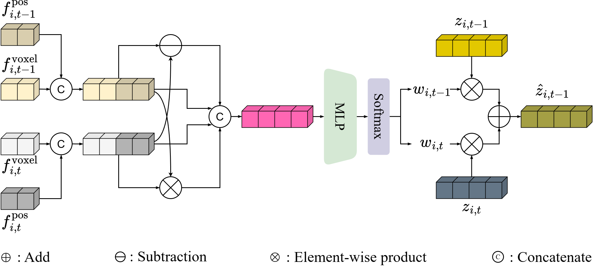
Design of Cross-Temporal Logit Aggregation (TLA). This module adaptively aggregates semantic logits from adjacent frames by explicitly modeling cross-view discrepancies in both feature representations and spatial contexts.
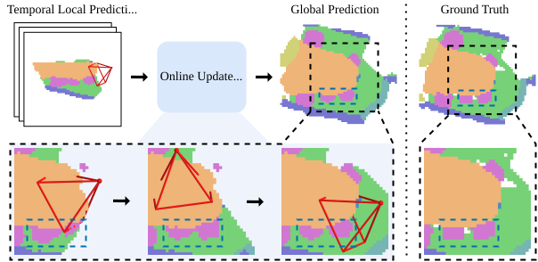
Visualization of the proposed Online Update Strategy. As the global occupancy incrementally built over time, unreliable predictions from early observations are progressively refined with incoming reliable observations, verifying the efficacy of our online update strategy.
Quantitative Results
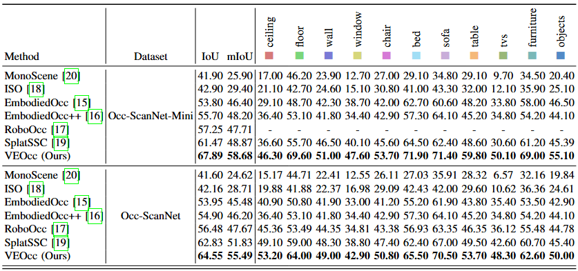
Local Prediction Performance on the Occ-ScanNet dataset. We mark the best score in bold.
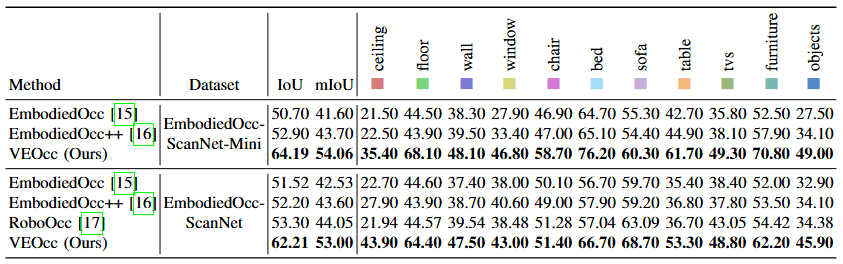
Embodied Prediction Performance on the EmbodiedOcc-ScanNet dataset. We mark the best score in bold.
Qualitative Results

Qualitative results of local occupancy prediction on Occ-ScanNet. Our VEOcc achieves noticeably better prediction quality in object details, structural boundaries, occluded regions, and overall spatial smoothness compared with previous Gaussian-centric approaches.
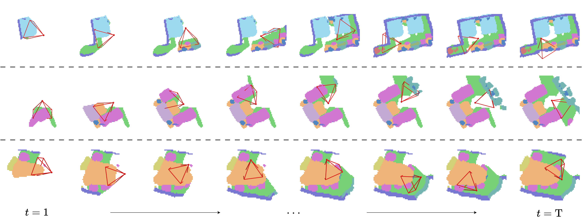
Qualitative results of embodied occupancy prediction on EmbodiedOcc-ScanNet. Our VEOcc successfully achieves highquality online occupancy prediction under diverse exploration trajectories.
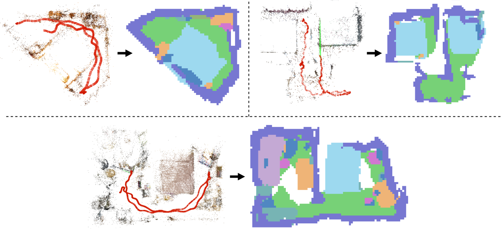
Zero-shot real-world generalization on self-collected indoor sequences. We show the COLMAP sparse reconstruction and our incrementally generated global semantic occupancy map for a single-room layout and double-room layouts. Without fine-tuning or scene priors, VEOcc accurately recovers geometry and semantics in unseen environments.
Additional Visualizations
EmbodiedOcc-ScanNet
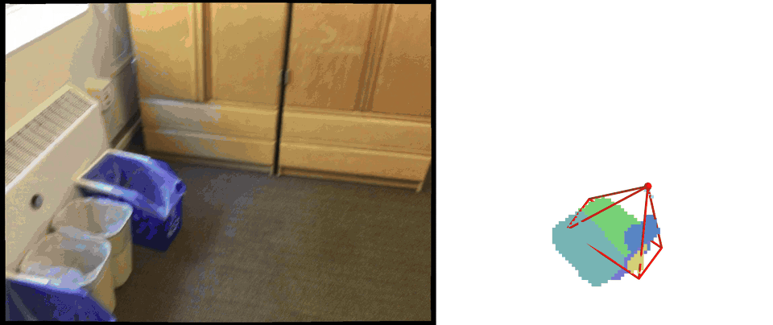
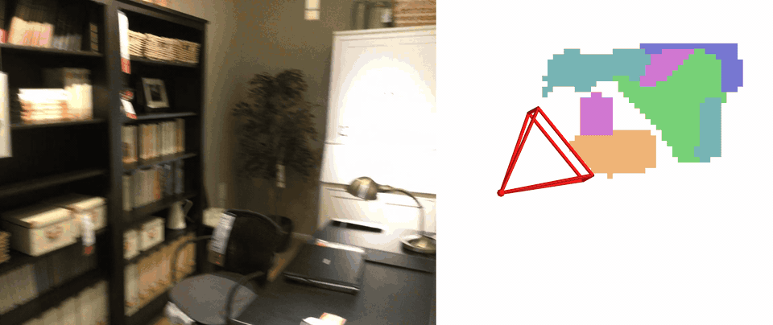
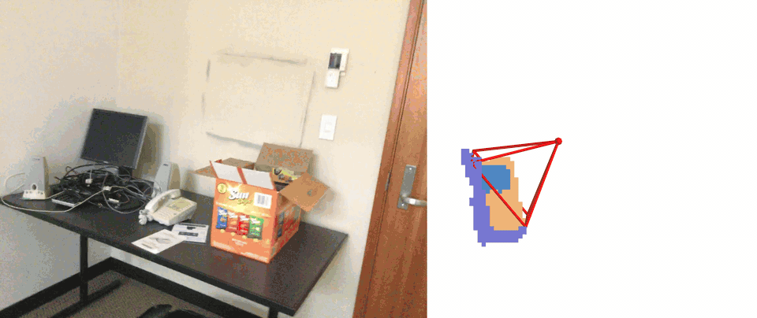
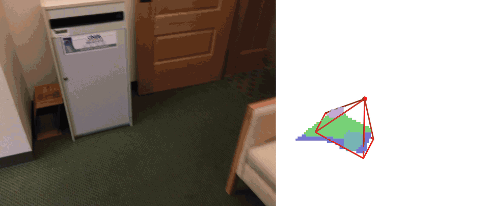
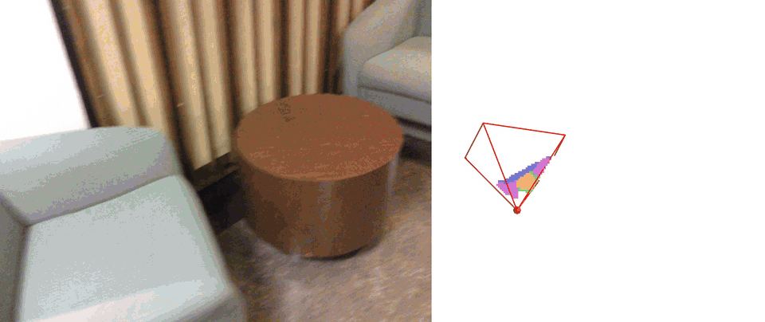
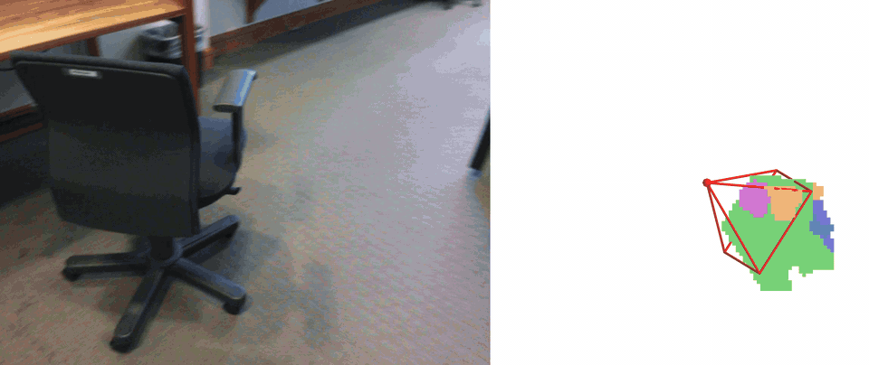
Self-Collected Indoor Sequences
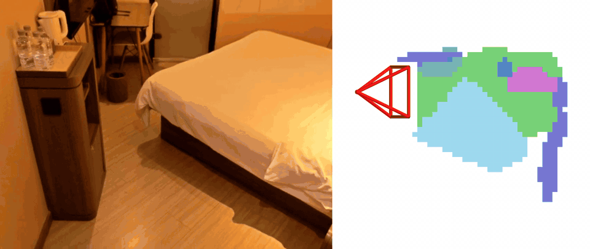
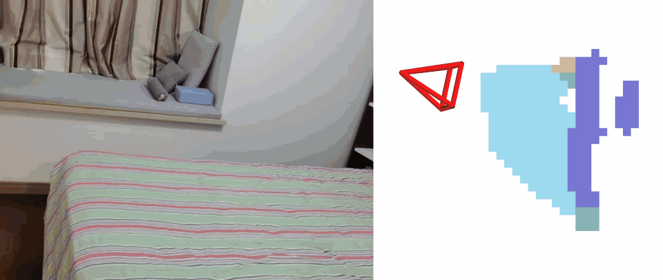
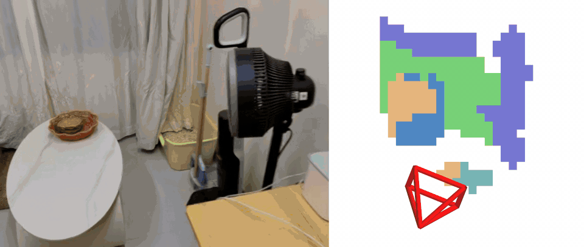









BibTeX
TODO